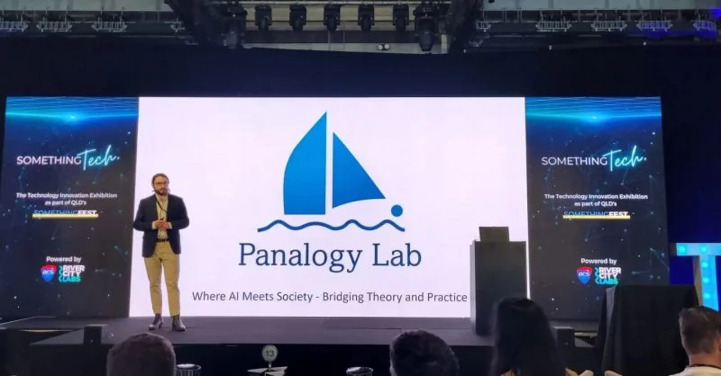
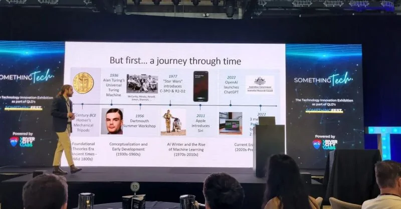
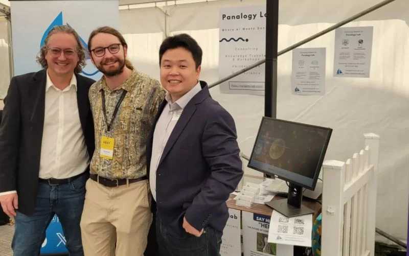
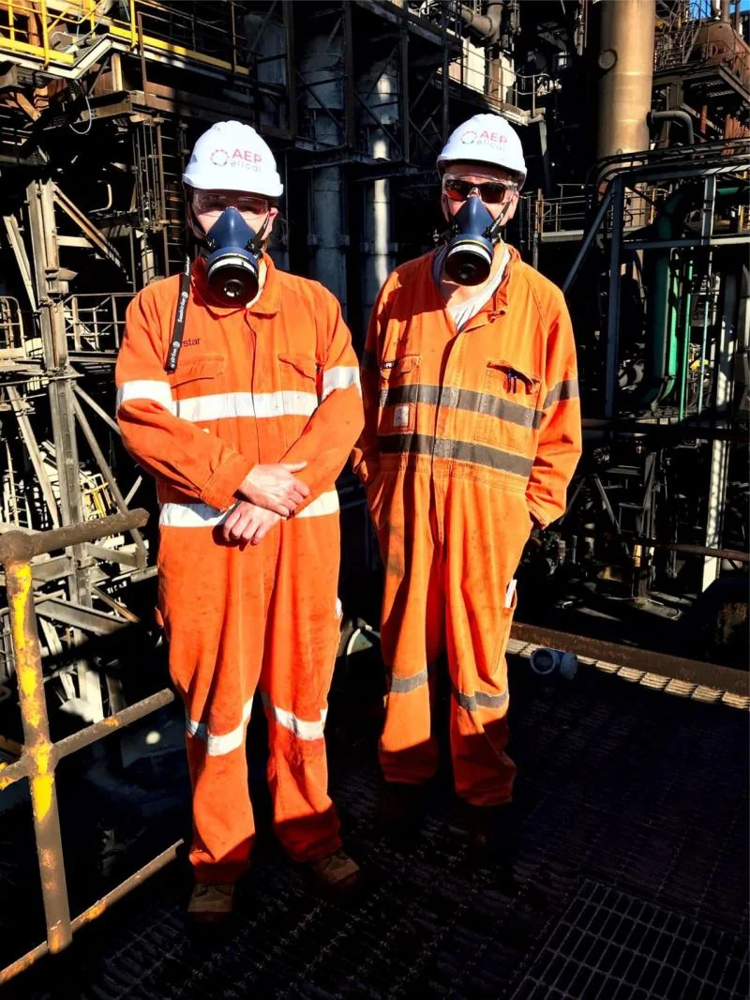

Research in practice
Projects
A selection of research projects, software and engineering work I have led or contributed to. Each entry describes my role and what the team delivered.
QUT · Future Skills Organisation · 2025–2026
Generative AI adoption by Australian workers
Principal Investigator & Project Lead · $229,531 commissioned study
This national study examined how workers use generative AI and what support they need from employers. I led the study, coordinated the research team and working-group engagement, and helped develop the findings into resources for employers.
The work involved a 41-member national AI Research Working Group representing 36 organisations, spanning government, unions, professional bodies, universities and employers of different sizes.
DeliveredA national research report, stakeholder workshops and co-design sessions, and an employer-support toolkit released as a working web application and downloadable resources for organisations building AI literacy, workforce capability and readiness.
Read the report & explore the resourcesQUT research collaborations · 2026–present
Research software for archives and scientific interviews
Principal Investigator & Project Lead
I lead two projects that help researchers search source material and check information extracted from it.
Spanish Inquisition archival research platform
With collaborators at QUT, the University of Oviedo and QUT eResearch, I’m developing software to search historical judicial records and extract information for analysis. I lead the project and supervise technical development. Extracted records retain links to the original documents so researchers can check them.
Web of Stories scientometrics platform
This platform lets researchers search interviews, videos and transcripts from prominent scientists. It links people and concepts across the material, helping researchers trace scientific relationships and the development of ideas.
DeliveredTwo access-controlled research applications deployed in QUT-supported environments, with workflows for structured extraction, retrieval and provenance-linked analysis. Access is managed within the research collaborations.
QUT · Queensland Department of the Premier and Cabinet · 2023–present
Behavioural simulation for public decisions
Chief Investigator & Project Lead
I lead research and stakeholder engagement on combining synthetic populations, behavioural evidence and agent-based modelling to investigate vulnerability, resilience and decisions in disaster management and crime prevention.
My responsibilities include MPhil supervision, technical coordination and engagement with government and industry research partners.
DeliveredApplied AI and behavioural-simulation platform development, with research demonstrations delivered in April 2026.
Government, industry & university collaborations
Evidence for policy and practice
Drivers of AI Investment · IP Australia
Co-author of a 2023 commissioned study connecting workforce skills, job advertisements and patenting activity to investigate AI investment and innovation.
Read the published IP Australia report ↗
RiskWise · AI-assisted qualitative analysis
As Applied AI Research Lead, I led conceptual design and contributed to technical development of a workflow for scalable, traceable qualitative coding. It combines semantic automation, language models, human review and provenance-linked outputs, and has been applied to more than 4,250 Australian agricultural research, conference and extension artefacts.
AI copilots, work and professional identity
I lead a QUT ethics-approved longitudinal study, developed with Inspired Education Group, examining how enterprise AI copilots affect work practices, capability, identity, trust and collaboration in Queensland high schools.
Panalogy Lab · Independent applied AI R&D · 2023–present
SurveyLM
Co-Creator & Research Lead
I co-created a platform for constructing configurable synthetic populations and running model-based experiments on attitudes, values, preferences and decisions. The work combines structured data generation, cross-model comparisons and statistical analysis.
I lead the research and experimental design, contribute to development and coordinate the platform’s requirements. Much of my work tests its responses against human evidence and examines where the results depend on modelling choices.
DeliveredA research platform, a public technical report and peer-reviewed validation research comparing human and synthetic data in service-failure and recovery settings.
Technical report ↗ · Peer-reviewed study ↗
I presented our augmented language model work and showcased Panalogy Lab at Something Tech / Something Fest in Brisbane in 2023.






Panalogy Lab · Industrial applications
AI for engineers and operators
Agent Rung · Industrial control intelligence
An industrial fault-diagnosis and decision-support system combining live PLC data, vendor-specific knowledge and safety-oriented reasoning. The system has been deployed at industrial sites in Australia.
My contribution: defining industrial use cases and requirements with engineering partners, and coordinating deployment with the technical team.
Icebreaker · Virtual production supervisor
A manufacturing decision-support system combining production-line modelling, a language-model reasoning agent and natural-language queries of production data. Initial pilot work focused on a food and beverage manufacturing plant on the Gold Coast.
My contribution: scoping the project with the industry partner, defining operational requirements and coordinating the engineering and software work. Pilot findings are context-specific; broader deployment remains under development.
GAIA / Expert Recommender
Related knowledge-system applications combine document intelligence, structured extraction, semantic search, knowledge graphs and expert-recommendation workflows.
Explore Panalogy LabPanalogy Lab · Verbrec · 2025
Organisational AI readiness
Project Lead
I led an AI-readiness and requirements study across a multi-site, multi-team engineering services organisation. I worked with staff to understand their needs, assess possible uses of AI and plan how the organisation could introduce them.
DeliveredAn organisational readiness assessment and requirements-scoping study to support decisions about where and how to introduce AI.
AEP Elical · 2018–2023
Engineering in operational environments
Electrical Engineer, Project Manager & Business / Quality Leadership


Before my current research and AI work, I delivered multidisciplinary projects in electrical engineering, automation, control-system modernisation and functional safety. My work covered scope and requirements, client coordination, technical interfaces, project delivery, and quality and safety management.
I also served as HSEQ Manager (2019–2022), leading an ISO 9001:2015 quality management system, and Nyrstar Client Relationship Manager (2021–2023). This experience continues to shape how I approach AI in operational and safety-sensitive settings.
| Client / location | Project work |
|---|---|
| NyrstarPort Pirie | Granulation-system concept and detailed design; slag-caster frame and fume-hood modifications; TSL plant launder and tapping-floor upgrade; multidisciplinary project-leader services. |
| BMA & BHPQueensland / NSW | Control-system modernisation, functional and machine safety, a functional-safety audit and industrial process-control platform selection. |
| Glencore / Mount Isa Mines | Substation layout studies, electrical drafting, process-water modifications and industrial infrastructure project support. |
| Wilmar Sugar | Operations and maintenance planning and a functional-safety program for Invicta Mill. |
| EDL Energy | Wingfield biodome engineering and commissioning support. |
| AMS GroupPort of Melbourne | Vessel-tracking system upgrade project. |
| Powerlink Queensland2016–2017 | Earlier digital asset as-built information and data-migration work. |